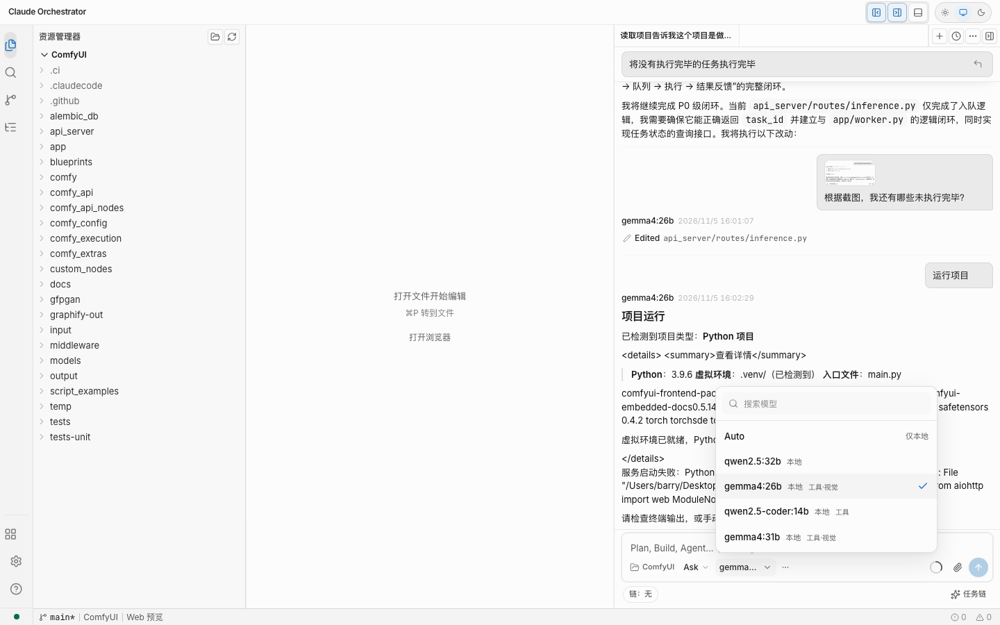

Claude Orchestrator · 整体功能测试与优化报告
测试时间：2026-11-05 16:00–16:40 · 测试对象：本仓库（桌面端已运行实例 + Bridge 18790 / UI 5188）· 方式：项目门禁脚本 + RPC 接口实测 + 浏览器模拟真人操作 + 执行日志审计
结论摘要
静态门禁（模型路由、回合策略、共享单源、web tsc、Cursor 视觉对齐等 17 类脚本全部通过），但真实链路实测发现 4 个确证缺陷 + 2 个高危设计缺陷，其中两个可以直接解释你提的三个问题：
| # | 问题（实测确证） | 严重级 | 对应你的反馈 |
|---|---|---|---|
| B1 | 本地流式输出合并算法丢字符：要求输出 30 个「的」，流式路径只返回 1 个；非流式/直连 Ollama 均正常（24–26 个） | P0 | 问题2「本地模型断断续续」 |
| B2 | 对话模型选择器在本地模式下完全不显示云模型（截图确证），云模型只能去设置页绕行 | P0 | 问题3「无法在对话中选择云模型」 |
| B3 | 云模型永远走「纯文本直聊」：buildPlainChatPrompt 明确告知模型「你是普通聊天助手，没有实时工具」，无工具环、无读文件、无 MCP，写盘只靠 ```workspace-write``` 文本围栏 | P0 | 问题1「云模型无法像 Cursor 一样工作」 |
| B4 | 只读意图（「读取X/告诉我X」）被强制直聊且不下发任何只读工具，实测模型凭空编造了不存在的 package.json 的 name=my-project | P0 | 问题1/2 的「答非所问」体感 |
| B5 | 本地 Agent 工具环整体 stream:false，每轮 20–60s 黑屏等待、成段蹦字；配合 18–20GB 模型在 32GB 内存上跑，出现换页卡顿 | P1 | 问题2「断断续续」 |
| B6 | isClaudeCliModel 命中（claude/sonnet/opus/haiku 开头）直接硬报错「已移除 Claude CLI」，而设置里 cloudModelCatalog 恰好编目了 sonnet/opus/haiku —— 选了必炸 | P1 | 问题1/3 |
另发现 5 个 P2 级问题（设置脏数据、num_predict 截断等），见第四节。
一、代码级测试（项目门禁）结果
| 门禁脚本 | 结果 | 说明 |
|---|---|---|
| check-model-route | PASSED（29 项断言） | 手选 > Agent frontmatter > Auto 路由逻辑正确；禁止静默换通道的硬闸都在 |
| check-turn-policy | PASSED（29 项断言） | 意图分类（write/readonly/chat）边界用例全部通过 |
| check-shared-parity | PASSED（13 项断言） | TS/MJS 双端单源一致；未安装模型硬闸在位 |
| check-web-tsc | PASSED | 前端 TypeScript 0 错误 |
| check-cursor-parity-e2e | PASSED（40+ 项断言） | diff 样式、文件卡、字体 token 等 Cursor 视觉对齐通过 |
| check-ui-smoke / eslint-hot 等 | PASSED | UI 契约冒烟通过 |
结论：「门禁全绿但真实体验坏」——现有门禁几乎全是源码静态断言，没有覆盖「流式内容正确性」「云端工具环」「选择器可见性」这三类端到端行为，这正是本次实测抓到问题的地方。建议把下文 B1/B2/B3 做成回归用例补进 scripts/check-*.mjs。
二、功能实测（模拟人）结果与问题
2.1 用例总表
| 用例 | 操作（模拟人） | 预期 | 实际 | 结论 |
|---|---|---|---|---|
| T1 UI 冒烟 | 浏览器打开 http://127.0.0.1:5188，检查工作台、聊天页、设置页 | 页面正常、无 JS 报错 | 渲染正常，0 个 pageerror/console error | 通过 |
| T2 云模型直连 | RPC cloud-direct:prompt（deepseek-flash，10 token 小请求） | 正常返回 | ok，0.9s，用量 10 token | 通过 |
| T3 本地直聊（无流式） | RPC local-orchestration:prompt（qwen2.5-coder:14b，不带 requestId） | 正常返回 | ok，26 个「的」全量返回 | 通过 |
| T4 本地直聊（流式，即 UI 实际路径） | 同上但带 requestId（触发流式） | 内容完整 | 只返回 1 个「的」（要求 30 个） | 缺陷 B1 |
| T5 Ollama 直连对照 | 绕过应用直 POST 127.0.0.1:11434/api/chat（stream:false） | — | 24 个「的」，说明模型与 Ollama 本身正常，问题在应用层 | 对照证据 |
| T6 本地 Agent·读文件（只读意图） | RPC：Agent 模式问「读取当前工作区的 package.json，告诉我 name 字段」 | 调用 read_file 并回答真实值 | 0.8–2.5s 即返回，无任何工具调用，编造「my-project」（该工作区根本没有 package.json） | 缺陷 B4 |
| T7 对话区选择云模型 | 点击聊天输入框左下角模型胶囊，查看下拉列表 | 云 + 本地模型都可选 | 只有 Auto(仅本地) + 4 个本地模型，0 个云模型 | 缺陷 B2 |
| T8 云模型 Agent 能力（代码审查） | 审 use-chat-send.ts 云分支 + cloud-direct.cjs | 云模型应有工具环 | 云模型只发一段拼接的纯文本 prompt，系统提示明写「没有实时工具」 | 缺陷 B3 |
2.2 关键截图：对话区模型菜单无云模型

下拉里是 Auto（标注「仅本地」）、qwen2.5:32b、gemma4:26b、qwen2.5-coder:14b、gemma4:31b —— 设置里已启用且可调用的 deepseek-flash / deepseek-v4-pro 完全没有出现。
三、执行日志分析：三个问题的根因
3.1 日志概览
审计数据有两处：.claudecode/logs/app.log（968 行）与 .claudecode/workbench.db → log_entries（1702 条，全部 INFO，无 WARN/ERROR 落库——告警级别缺失本身是个日志问题，失败回合只记在 INFO 行的 err= 字段里）。日志中的通道字段 ch= 共 5 种：direct / local / orch / cloud / cli。
| 统计（截至 2026-10-28） | 数值 |
|---|---|
| [turn] 回合审计总数 | 约 90 回合；云通道仅 11 回合且全部是 direct/chat 或围栏写盘，0 回合云工具环 |
| 失败回合典型错误 | ① Ollama HTTP 400 "Value looks like object, but can't find closing '}'"（gemma4:26b / qwen2.5:32b 带 tools，共 7 次）② qwen2.5-coder:latest not found (404) ③ 语言不一致拒发 ④ workspace-write 围栏解析失败 |
| 耗时分布 | 本地直聊 1.4s–224s；本地工具环 17s–166s；云直聊 0.9s–20s |
3.2 问题1：使用云模型后，无法像 Cursor 一样正常工作
根因链（代码确证）：
web/src/hooks/use-chat-send.ts云分支：非 Claude 系云模型一律cloudDirectPrompt→buildPlainChatPrompt()把多轮历史压成「用户：…/助手：…」的纯文本，并注入提示 「你是普通聊天助手，没有实时工具」（chat-send-helpers.ts:344）。没有 tools、没有 read_file/code_search、没有 MCP、没有流式工具事件。- 写盘只能靠提示词要求模型输出
```workspace-write```JSON 围栏，再由前端正则解析落盘。日志里parsed=4 applied=4的云回合都是这个机制——脆弱（日志中已有 3 次「围栏无法解析」失败），且无法做「先探索再改」的 Cursor 式流程。 - 读文件只有一个补救 hack：
preReadInstructedWorkspaceFiles()预读用户消息里点名的文件拼进 prompt。没点名的文件、路径写错、文件过大 → 模型只能猜（T6 同款风险）。 - 讽刺的是：带完整工具环的
server/host-agent-loop.mjs本来就支持云后端（OpenAI 兼容 tools，含 code_search/read_file/write_file/run_tests 等 8 个工具），但它只在local-mcp模式被调用。云模型被硬编码排除在自己的工具环之外。 isClaudeCliModel()（sonnet/opus/haiku/claude-*）直接返回「已移除 Claude CLI」硬错误 → Anthropic 系模型即使配置了也 100% 不可用，而设置页还在把它们编目进 cloudModelCatalog。
3.3 问题2：使用本地模型时总是断断续续
四个叠加根因，按影响排序：
- 流式合并丢字符（P0，实测复现）：
server/vendor/cad/local-mcp-orchestrator.js → ollamaChatStream()里有一段启发式去重：let piece = delta if (content && delta.startsWith(content)) piece = delta.slice(content.length) else if (content && content.endsWith(delta)) piece = '' // ← 重复 token 被整块丢弃
Ollama 流式返回的是增量 token，不是累积文本。当新 delta 恰好是已累积内容的尾部重复（如连续两个「的」、连续换行、代码中的重复缩进），整段被丢弃——且content同时是最终落库文本，丢失是永久的。这就是「断断续续/文字缺块」的直接来源。 - Agent 工具环整体非流式：本地工具环每轮
stream:false（local-mcp-orchestrator.js:2862），thought 一轮结束才整体 emit 一次；每轮间隔 20–60s，UI 只能成段蹦字、长时间无响应。 - 硬件压力：32GB M1 Max 上启用的是 18–20GB 的 32B 级模型（qwen2.5:32b 19.9GB、gemma4:31b 19.4GB），叠加 Electron + 常驻 8–10 个 MCP 服务器，必然换页；日志里本地回合 224s、166s 的极端值与此吻合。
ollama ps显示模型平时不常驻，每轮冷加载再叠加。 - 生成预算：工具环
num_predict: 4096、未设num_ctx（回落模型默认 8k/32k），长回复被截断后进入「补写→再补写」的循环，观感也是卡顿/断续。日志中多次 400「closing '}'」就是 gemma/qwen2.5 系模型在带 tools 请求上的已知脆弱性，失败重试进一步拉长等待。
3.4 问题3：无法在对话中选择云模型
- 直接原因（UI 确证）：
web/src/components/chat-model-selector.tsx:47const listCloud = orchMode === "local-mcp" ? [] : cloudModels;
当前设置orchestrationMode: "local-mcp"（读取自 workbench.db chat_settings KV），云列表被整体置空。 - 死循环设计：设置页「运行模式」卡片的说明文字是「聊天页切换」，但聊天页唯一能切运行模式的入口是「选中一个云模型」（handleModelPick 里选中云模型才会把 orchestrationMode 写回 claude-code）——而云模型恰恰被隐藏了。用户被锁死在本地模式。
- Auto 也被绑架：Auto 的 hint 直接显示「仅本地」；Auto 在写盘意图下其实会路由到云（routeHint=prefer-cloud），但 UI 不让手选，行为与提示互相矛盾。
- 次要脏数据：cloudModelCatalog 中混入了
auto、sonnet/opus/haiku（claude-code:listModels 回退时把别名写进了目录），这些条目即使显示出来也不能正常用（见 B6）。
四、优化方案（按优先级）
P0-1 修复流式丢字（B1，一处小改，立竿见影）
文件：server/vendor/cad/local-mcp-orchestrator.js → ollamaChatStream()。Ollama NDJSON 本来就是增量，直接累加即可，删除全部启发式：
res.on('data') → onJsonLine(j) 内：
const piece = j?.message?.content ?? ''
if (piece) { content += piece; onDelta(piece) }
// 终包：last.message?.content 若非空且不同于 content，以流式累积为准（或取二者较长者）
同步补一条回归门禁：mock NDJSON 流（含连续重复 token），断言拼接结果无损。
P0-2 云模型接入现成工具环（B3，对齐 Cursor 的关键一步）
不需要新写后端——host-agent-loop.mjs 已支持 OpenAI 兼容云后端 + 8 个工具。改法：
use-chat-send.ts云分支：当turnPolicy.allowTools且非直聊时，改调host-agent:prompt（后端已有 RPC，前端类型也已声明，只是从未使用），把model传给resolveChatBackend走云；纯问答/Ask 仍走 cloud-direct。- host-agent-loop 云后端加流式：OpenAI
stream:true+ 增量解析tool_calls（delta 拼接），thought 逐段 emit 到message_delta。 ```workspace-write```围栏保留为「模型不支持 tools 时的降级」，不再作为默认路径。- 验收标准：云模型在 Agent 模式能完成「搜索→读文件→改文件→跑测试」一轮闭环，日志出现
ch=cloud且 toolTrace 非空。
P0-3 对话区永远显示云模型（B2）
// chat-model-selector.tsx const listCloud = cloudModels; // 删除 orchMode 三元 const listLocal = localModels;
- 选中云模型时沿用现有 handleModelPick 逻辑（写 orchestrationMode=claude-code）；选中本地模型同理写 local-mcp，让「选模型」本身就是「切通道」，与设置页「聊天页切换」的文案自洽。
- Auto 的 hint 改为「改码偏云 / 问答偏本地」，与实际路由一致。
- 顺手清洗 catalog：从 cloudModelCatalog 移除
auto；sonnet/opus/haiku 别名不再落库（见 P1-2）。
P0-4 只读回合下发只读工具（B4，消灭编造）
- turn-policy 增加一档：
intent === 'readonly'且 Agent/Plan 模式时allowTools = true，但工具白名单只含code_search / read_file / get_diagnostics / git_status（禁 write/run_tests）。local-mcp-orchestrator 相应支持「只读工具子集」参数。 - 兜底：直聊路径当模型回答中出现具体文件内容断言但本轮未注入该文件内容时，前端展示「未读盘，回答可能无依据」水印（现有 audit 机制可复用）。
P1-1 本地工具环流式化 + 生成预算
- 工具环
/api/chat改stream:true（Ollama ≥0.3 支持 tools+stream），边流边累积 thought/tool_calls；若模型流式 tools 不稳，则退而求其次：每轮开始先 emit「第 N 轮 · 正在调用 X…」，消除长黑屏。 num_ctx从模型能力缓存（modelsCapabilities 已有 contextLength）注入；num_predict提到 8192 或按模型配置；请求体加keep_alive: "30m"避免每轮冷加载。- UI 增加内存适配提示：启用 ≥16GB 模型时提示「32GB 内存机型建议 Agent 用 14B 级模型」。
P1-2 处理 Anthropic 系模型的死路（B6）
三选一：① 实现 Anthropic Messages API 的 cloud-direct + tools（工作量最大，收益是与 Claude Code 对齐）；② 供应商里接一个 OpenAI 兼容的 Anthropic 网关（如已有 cc-switch 链路）；③ 短期至少在模型目录/选择器中隐藏 sonnet/opus/haiku 别名或标注「未接通」，不再编目、不再可选中，避免选中即报错。
P1-3 日志分级修正
logsAppend 前端固定传 level:"INFO"；失败回合（ok=false）应记 WARN/ERROR。改 appendTurnAudit：ok=false → level "WARN"，err 非空 → "ERROR"。这样 log_entries 的分级统计才有意义。
P2 其他
settings.localOllamaModel残留未安装标签qwen2.5-coder:latest（日志 404 来源）。保存设置时校验 tags，或启动时静默迁移到已安装最近似标签。resolveModelForExecution在 TS/MJS 双份实现，靠 check-shared-parity 文本比对维系——建议编译期单源（shared 目录 → 双端 tsc 产物）。- 云直聊请求不含真实 system role（历史拼成文本），接通工具环后应改为 messages 数组结构，减少 token 与指令漂移。
- 当前工作区指向 ComfyUI：测试「本仓库功能」时注意先切工作区，避免把别项目上下文注入对话。
五、与 Cursor IDE 的功能对比与差距清单
| 能力 | Cursor | 本项目现状 | 差距结论 |
|---|---|---|---|
| 对话模式 Ask/Plan/Agent | 有 | 有（Ask/Plan/Agent，turn-policy 单源） | 持平 |
| Agent 工具环（读/搜/写/跑命令/测试） | 全模型可用 | 本地模型可用；云模型被排除（B3） | 最大差距，P0-2 解决 |
| 模型任意切换（不绑执行模式） | 任意 | 绑定 orchestrationMode，本地模式隐藏云模型（B2） | P0-3 解决 |
| 流式输出完整性 | 稳定 | 本地流式丢字（B1） | P0-1 解决 |
| Diff 预览 / Accept / 逐文件回滚 | 有 | 有（CursorDiff 行样式已对齐，文件卡 + Review） | 持平 |
| @codebase / @文件 / @git / @problems 上下文注入 | 有 | 有（expandUserLineWithWorkspaceFiles 等） | 持平 |
| Tab 补全 / Ghost Text | 有（自研 FIM） | 有（codemirror-ghost-text + tab-complete），质量取决于本地模型 | 机制有，效果弱于 Cursor 专训模型 |
| 终端集成 / 运行命令 | 有 | 有（node-pty + 终端回显 + Add to Chat） | 持平 |
| MCP | 有 | 有（健康检查 + 通道闸） | 持平 |
| 内嵌浏览器预览 / DOM 附带 | 无此内置 | 强于 Cursor（embedded-browser + DOM 附带） | 优势 |
| 多 Agent 编排 / 任务链 / 定时任务 | 无（Background Agent 部分覆盖） | 强于 Cursor（chains / scheduler / agents） | 优势 |
| Rules（项目规则注入） | .cursor/rules | 有 project-rules + 工作区注入 | 持平 |
| Checkpoint / 一键回滚整个会话改动 | 有 | 有 stashWorkspaceWriteCheckpoint / chat-checkpoint-prefs，粒度到文件 | 基本持平，缺会话级快照 UI |
| BugBot / 自动代码评审 | 有 | 无对应物（可用任务链+Agent 拼装） | P2 可用任务链模板补齐 |
| 后台 Agent（云端托管执行） | 有 | 无（全部本机执行） | 架构差异，短期不追 |
附录：复现命令
# 流式丢字（B1）：带 requestId=流式 → 丢字；去掉 requestId → 正常
curl -s -X POST http://127.0.0.1:18790/rpc -H 'Content-Type: application/json' \
-d '{"channel":"local-orchestration:prompt","args":[{"userLine":"请只输出30个连续的汉字「的」，不要空格、不要标点、不要任何其他内容。","languageSourceLine":"请只输出30个连续的汉字「的」","priorMessages":[],"orchestratorModel":"qwen2.5-coder:14b","requestId":"test-dup-1","agentBasenameOverride":"__general__","interactionMode":"ask","allowWrites":false,"autoApplyWrites":false,"forceDirectChat":true,"readOnlyTurn":true}]}'
# Ollama 直连对照（正常返回 ~24 个「的」）
curl -s http://127.0.0.1:11434/api/chat -H 'Content-Type: application/json' \
-d '{"model":"qwen2.5-coder:14b","stream":false,"think":false,"messages":[{"role":"user","content":"请只输出30个连续的汉字「的」，不要空格、不要标点、不要任何其他内容。"}]}'
# 云模型可用性（当前供应商配置可正常调用）
curl -s -X POST http://127.0.0.1:18790/rpc -H 'Content-Type: application/json' \
-d '{"channel":"cloud-direct:prompt","args":[{"prompt":"只回复两个字：收到","model":"deepseek-flash","timeoutMs":60000}]}'
# 只读意图无工具 → 编造（B4）
curl -s -X POST http://127.0.0.1:18790/rpc -H 'Content-Type: application/json' \
-d '{"channel":"local-orchestration:prompt","args":[{"userLine":"读取当前工作区的 package.json，只告诉我 name 字段的值，不要做别的。","languageSourceLine":"读取当前工作区的 package.json","priorMessages":[],"orchestratorModel":"qwen2.5-coder:14b","requestId":"t","agentBasenameOverride":"__general__","interactionMode":"agent","allowWrites":true,"autoApplyWrites":true}]}'
# 模型池与运行模式（chat.pools 有云模型，但 orchestrationMode=local-mcp）
curl -s -X POST http://127.0.0.1:18790/rpc -H 'Content-Type: application/json' -d '{"channel":"cloud-providers:getModelPools","args":[]}'
curl -s -X POST http://127.0.0.1:18790/rpc -H 'Content-Type: application/json' -d '{"channel":"chat-settings:get","args":[]}'
报告生成：WorkBuddy · 2026-11-05 · 测试均通过本机已运行实例执行，未修改任何项目文件与设置。